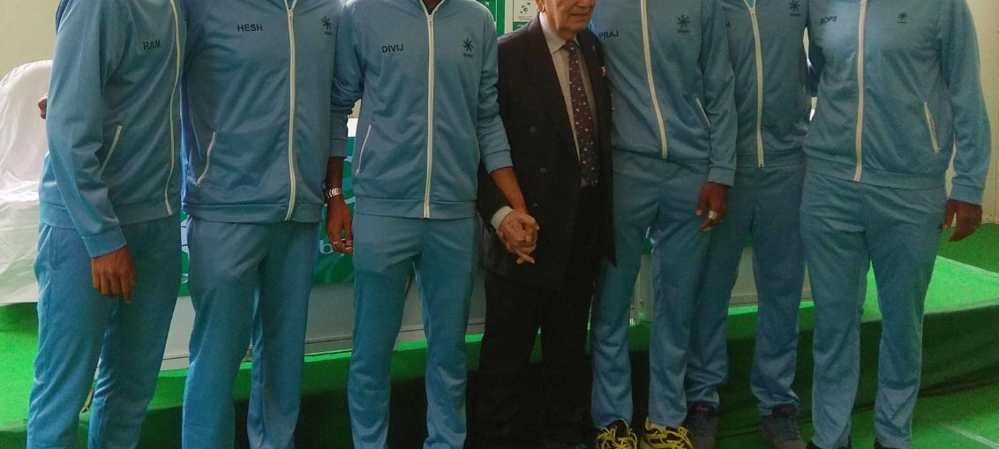

Posted at Date: February 01, 2019
Credit : রাইট স্পোর্টস ওয়েব ডেস্ক
বাজার ও টেলিভিশনের চাপেই বদল ডেভিস কাপে, বললেন নরেশ কুমার

নরেশ কুমার নব্বই পেরিয়েছেন গত ডিসেম্বরে। ভোলেননি যদিও কিছুই। সাউথ ক্লাব তাঁকে এখনও সেভাবেই টানে যেমন টানে উইম্বলডন। চলে আসেন, বৃহস্পতিবার সঙ্গী ছিলেন এনরিকো পিপার্নো। এই কথাবার্তা শুরু হয়েছিল, ডেভিস কাপের সূচির লটারি এহং ইতালির সাংবাদিক সম্মেলন শুরুর পর। কথা শুরুর পর যখন ভারতীয় দলের সাংবাদিক সম্মেলন হবে, নিজেই অনু্রোধ করেছিলেন, ভারতীয়রা কী বলছে শুনে নিয়ে তারপর শেষ করবেন সাক্ষাৎকার। ইতালির সঙ্গে তাঁর সম্পর্কও বহু পুরনো। গত শতকের চারের দশকের শেষ দিকে খেলেছিলেন একবার ডেভিস কাপে, ইতালির বিরুদ্ধে। হারিয়েছিলেন নিকোলা পিয়েত্রানজেলিকে, ডবলসে যাঁর সবচেয়ে বেশি ম্যাচ জেতার রেকর্ড ভেঙেছেন লিয়েন্ডার পেজ। সেই লিয়েন্ডারের ডেভিস কাপে মাত্র ষোল বছর বয়সে অভিষেকের পেছনেও আবার নরেশ কুমারই। নব্বইয়ের যুবক জানিয়ে দিলেন, আগামী দু-দিনও, একটা বড় টুপি মাথায় চলে আসবেন সাউথ ক্লাবে, খেলা দেখতে!
● ইতালির বিরুদ্ধে ভারতের সম্ভাবনা?
পঞ্চাশ-পঞ্চাশ। ইতালি সামান্য এগিয়ে থাকলেও খেলাটা ঘাসের কোর্টে। ইতালির টেনিস-অতীত ঘাসে ততটা উজ্জ্বল নয়। তা ছাড়াও, ফেভারিট হিসাবে খেলতে নামার চাপও থাকবে। ভারতীয়রা তুলনায় হয়ত কম অভিজ্ঞ। কিন্তু এই মুহূর্তে ভারতীয় খেলোয়াড়রা সবাই উঠএ আসছে বিশ্ব র্যাঙ্কিংয়ে। আমরা এখনও জানি না ওরা কতটা এগোতে পারে। তাই উত্তেজক টাইয়ের সম্ভাবনা।
● ঘাসের কোর্টে খেলতেই চেয়েছিল ভারত…
স্বাভাবিক। কারণ ওরাও জানে যে ইতালীয়রা ঘাসে খেলতে পছন্দ করে না। ততটা স্বচ্ছন্দ নয়। তবে, ভারতীয়রাও খুব বেশি খেলেনি ঘাসে। তাই, ঘাসের কোর্টে খেলা বলেই ভারতীয়রা সুবিধা পাবে কিনা, বা পেলেও কতটা, নিশ্চিত নই।
● এই ভারতীয় দলের কোন ব্যাপারটা সবচেয়ে ভাল?
সবাই একসঙ্গে আছে, দলে কোনও আভ্যন্তরীণ গোলমাল বা ঝামেলা নেই। সব কিছু পেছনে ফেলে এসেছে এবং এভাবেই এগোতে হবে। একটা সময় ছিল, ভারতীয় টেনিস মানেই যেন টেলিভিশনের সোপ-অপেরা! সেখান থেকে বেরিয়ে এসে এখন একটাই কাজ, ম্যাচে মনঃসংযোগ বাড়ানো, লক্ষ্যে স্থির থাকা এবং সবাই মিলে চেষ্টা করা যাতে ভারতীয় টেনিস এগিয়ে যেতে পারে। ওদের খুশি-খুশি ভাবটা ভাল লাগছে দেখতে। এমনই থাক, ভাল খেলার চেয়েও এটা বেশি গুরুত্বপূর্ণ।
● অধিনায়ক হিসাবে মহেশ ভূপতির ভূমিকা?
অভিজ্ঞ, বহু দিন সর্বোচ্চ স্তরে খেলেছে, ডেভিস কাপেও বহু স্মরণীয় জয়ের সাক্ষী। দলটাকে একসূত্রে গেঁথেছে। ওর অভিজ্ঞতা এবা খেলোয়াড় হিসাবে ওর অতীত, দুটোই কাজে লাগবে এই তরুণ খেলোয়াড়দের। আর, খেলোয়াড়রাও প্রতিভাবান প্রত্যেকে। মহেশ যেমন বলবে সেভাবেই এগিয়ে চলুক।
● লিয়েন্ডার পেজের অনুপস্থিতি …
কলকাতায় আসতেই পারত লিয়েন্ডার। কথা বলতে পারত সবার সঙ্গে। ওর নিজের শহরে, নিজের ক্লাবে খেলা।
● র্যাঙ্কিংয়ে ইতালি এগিয়ে …
জানি। আর এ-ও জানি যে, ডেভিস কাপে র্যাঙ্কিং সত্যিই তত বড় ব্যাপার নয়। ঘরের মাঠে ঘরের দর্শকসমর্থনের সামনে খেলা অনেকটাই অন্য রকম। আর ডেভিস কাপ যেহেতু দেশের হয়ে খেলা, নিজেকে উদ্দীপ্ত করে যদি কেউ ঠিকঠাক খেলতে পারে কোর্টে, অন্যরকম হতেই পারে।
● ডেভিস কাপের নতুন ফরম্যাট পছন্দ?
এখন যা যুগ পড়েছে, কোন্ দিন দেখবেন বলা হচ্ছে, ‘উইম্বলডন ফাইনালটা দু-ঘন্টার মধ্যে শেষ করতেই হবে, কারণ, তারপরই একটা বাস্কেটবলের ফাইনাল আছে যেখান থেকে অনেক বেশি পয়সা পাওয়া যাবে’! পুরোপুরি বাণিজ্য-চালিত, টেলিভিশন-চালিত যুগে বসবাস করছি আমরা। ভাবুন না, আমাদের সময় টাইব্রেকারে যখন দিক পাল্টাত খেলোয়াড়রা, আম্পায়ারের চেয়ারের পাশে দাঁড়ানোর সময়টুকুও পেতাম না। মাথা নিচু করে দৌড়েই চলে আসতাম নেটের এধারে। পরে, ঠিক হল, ৯০ সেকেন্ড সময় দেওয়া হবে দিক পাল্টাতে। কেন ৯০ সেকেন্ড? খেলার মাঝে টেলিভিশনে বিজ্ঞাপন দেখানো হবে, তাই! পরে সেই সময়টাও কমল। কিন্তু, সিদ্ধান্তগুলো নেওয়া হচ্ছে কোন ভাবনা থেকে, পরিষ্কার। এটাই যুগের ধর্ম, এভাবেই চলতে হবে এখন।
Top Stories

Calcutta Sports Journalists' Club requests the pleasure of your company at its annual awards functionMore...

Jasprit Bumrah has been declared fit and he will now be available for selection for India's third Test against England at Trent Bridge. More...

Ronaldo has increased Juventus' standing among Europe's elite. More...